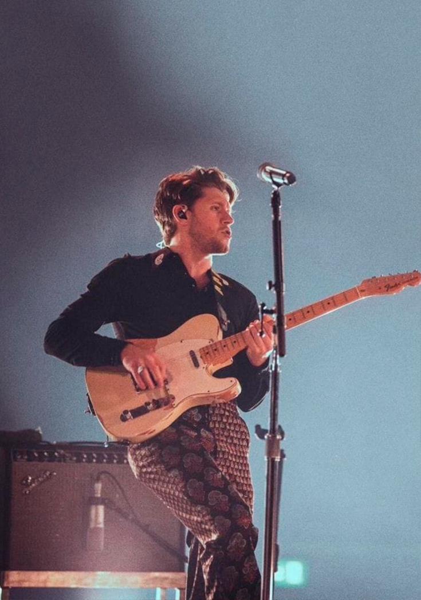
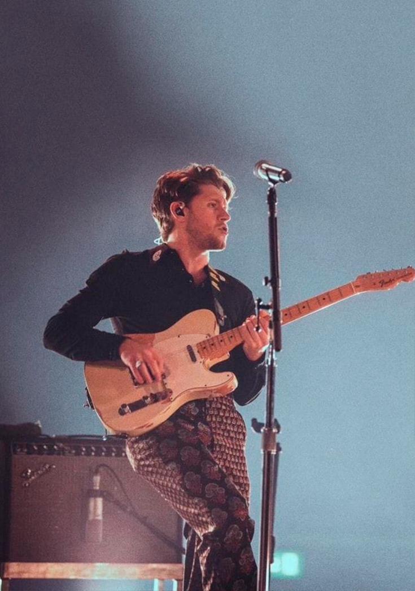

NIALL HORAN
 

Niall James Horan nació el 13 de Septiembre de 1993 en Mullingar, Irlanda y es un cantante y compositor. A comienzos de 2010, participó en un concurso llamado "Academy 2" y ese mismo año es cuando audiciona en "The X Factor" y queda para One Direction. En 2016 firmó un contrato para arrancar como solista en "Capitol Records" y lanza su primera canción: "This Town". En 2017, estrenó su álbum "Flicker" que incluye también dos sencillos que son "Slow Hands" y "Too Much to Ask". Dos años después, volvió a la música con "Nice to Meet Ya" y en Febrero del 2020 con "No Judgment". Finalizando, el 13 de Marzo de ese mismo año salió "Heartbreak Weather", su segundo disco.